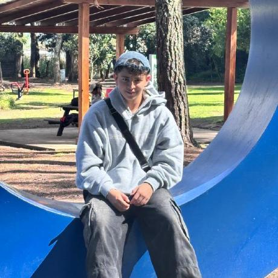

Portfolio / 2026
Sistemas.
Seguridad.
Movimiento.
Hola, soy Ariel Matias Melo. Estudiante de Ingeniería en Sistemas, enfocado en convertir problemas complejos en productos web útiles y experiencias digitales seguras.

Construyo con intención.
Me interesa el punto donde el desarrollo web se encuentra con la ciberseguridad: interfaces claras, sistemas confiables y soluciones que funcionan en el mundo real.
PythonJavaScriptTypeScriptReactNode.jsFastAPIPostgreSQLLinux
Proyectos
seleccionados.
01 — 05Credit Card Generator
JavaScript · LuhnGenerador y validador para aprendizaje y pruebas de calidad.
↗ 02Yachay
Plataforma educativaGestión académica y aprendizaje en una experiencia centrada en las personas.
↗ 03Buró de Crédito Ecuador
Fintech · WebSistema de evaluación crediticia diseñado para el contexto ecuatoriano.
↗ 04API Facturación Electrónica
REST API · SRIServicio para la gestión de facturación electrónica y requisitos del SRI.
↗ 05Más en GitHub
49 repositoriosExperimentos, herramientas y proyectos en evolución.
↗